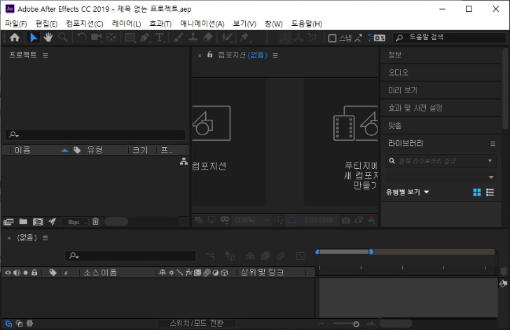

Menu
Adobe app
MENU
Close Menu
Photoshop
Lightroom
Lightroom Classic
Fresco
Illustrator
Dimension
XD
Dreamweaver
InDesign
Premiere Pro
Premiere Rush
After Effects
Animate
Audition
Character Animator
Prelude
Media Encoder
Adobe app 설명서
After Effects
사용
영상에서의 포토샵 같은 앱
영상 타이틀, 인트로, 전환, 등 영상 중간중간에 보이는 톡톡 튀는 효과, 텍스트, 음향을 사용하게 하는 앱
기능
모션그래픽
텍스트 이펙트
어도비 앱(Pr 등)들과 상호작용
튜토리얼
*사용화면

애프터 이펙트를 이용한 예시
관련 유튜버(강좌)
JohnKOBA Design
비됴클래스
편집하는여자
조블리
좐느
IB 96(긴 영상)
관련 직업 및 사용처 예시
영상 편집자
콘텐츠 제작자
시스템 최소 요구사양(권장사양)
윈도우
시스템
최소요구사항
프로세서(CPU)
Multicore Intel 프로세서(64비트 지원)
운영 체제
Microsoft Windows 10(64비트) 버전 1803 이상
램
최소 16GB(32GB 권장)
하드 디스크 공간
5GB의 사용 가능한 하드 디스크 공간, 설치 중 추가 여유 공간 필요(이동식 플래시 저장 디바이스에는 설치할 수 없음)
디스크 캐시를 위한 추가 디스크 공간(10GB 권장)
모니터 해상도
1280 x 1080 이상의 디스플레이 해상도
GPU(그래픽)
GPU VRAM 2GB
After Effects를 사용할 때 NVIDIA 드라이버 430.86 이상으로 업데이트 하는 것이 좋습니다. 이전의 드라이버에서는 충돌이 발생할 수 있습니다
인터넷
소프트웨어를 활성화하거나 구독을 확인하고 온라인 서비스를 이용하려면 인터넷 연결 및 등록이 필요합니다
맥os
시스템
최소요구사항
프로세서(CPU)
Multicore Intel 프로세서(64비트 지원)
운영 체제
macOS 버전 10.13 이상. 참고: macOS 버전 10.12은 지원되지 않음
램
최소 16GB(32GB 권장)
하드 디스크 공간
설치를 위한 6GB의 사용 가능한 하드 디스크 공간, 설치 중 추가 여유 공간 필요(대/소문자 구분 파일 시스템을 사용하는 볼륨이나 이동식 플래시 저장 디바이스에는 설치할 수 없음)
디스크 캐시를 위한 추가 디스크 공간(10GB 권장)
모니터 해상도
1440 x 900 이상의 디스플레이 해상도
GPU(그래픽)
GPU VRAM 2GB
After Effects를 사용할 때 NVIDIA 드라이버 430.86 이상으로 업데이트 하는 것이 좋습니다. 이전의 드라이버에서는 충돌이 발생할 수 있습니다
인터넷
소프트웨어를 활성화하거나 구독을 확인하고 온라인 서비스를 이용하려면 인터넷 연결 및 등록이 필요합니다
* 더 자세한 정보
한국어
/
영어
출처-
www.adobe.com